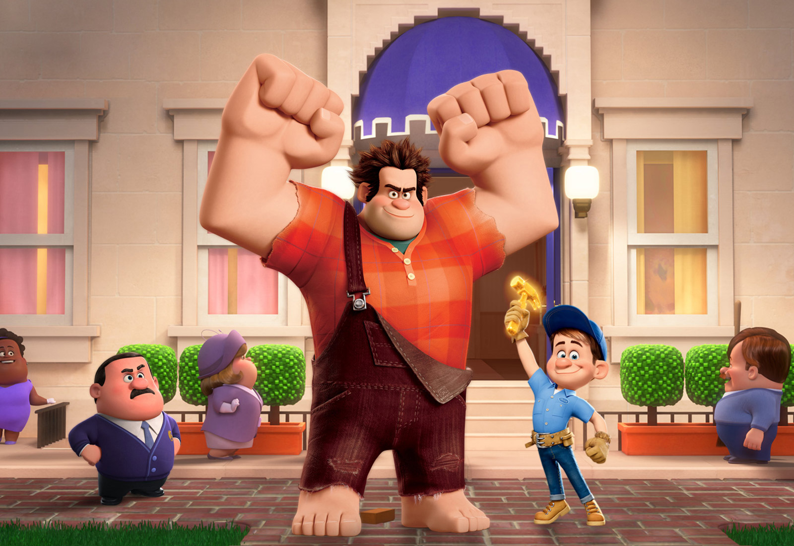
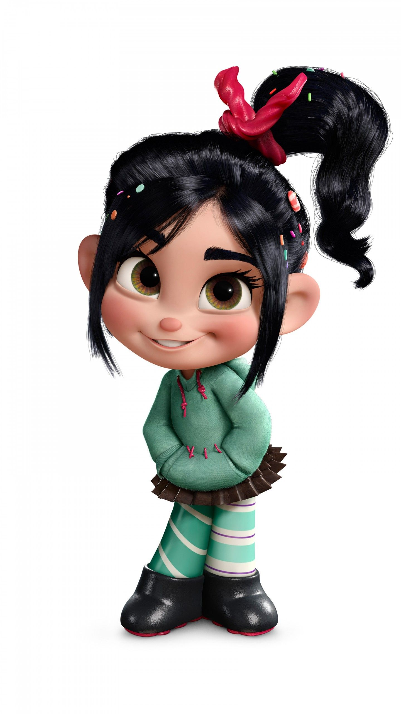
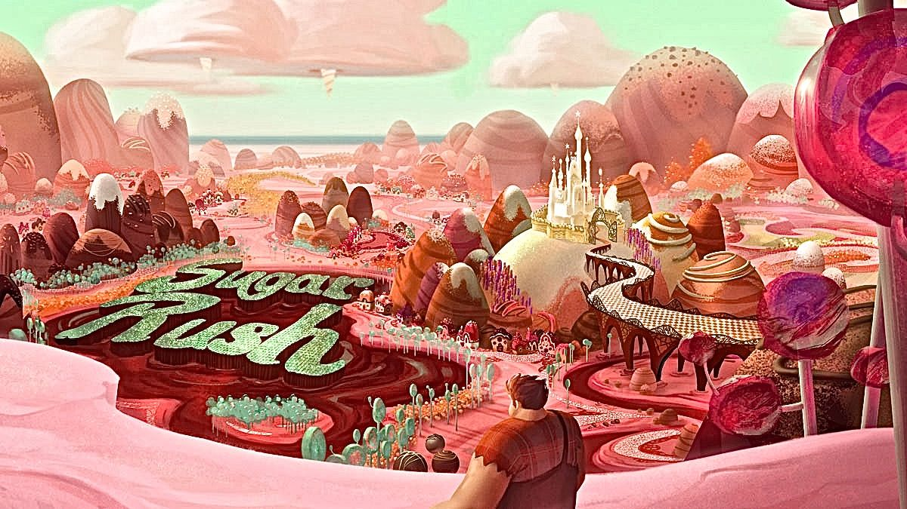
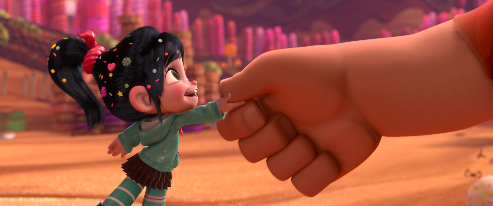

3.) Wreck-it Ralph (2012)
Naar mijn mening is dit misschien wel de meest "underrated" film dat Disney ooit heeft geproduceerd. Wreck-It Ralph is grappig, hartverwarmend en enorm vermakelijk. Ik heb deze film toen hij net nieuw was in de bioscoop gezien terug in 2012 en ik kan me nog goed herrineren dat ik me volledig vermaakte tijdens het kijken van de film. Het verhaal vond ik ontzettend orgineel; van de personages tot de fictieve wereld waar de film zich afspeelt. Je wordt compleet meegesleept bij de personages en de film heeft een plottwist die je niet zo snel ziet aankomen.
Het verhaal
- Ralph
- Venellope
- Andere (belangrijke) personages
Spring direct naar de personages:
Wreck-it Ralph
- Volledige naam: Wreck-it Ralph
- Roepnaam: Ralph
- Over:
Ralph zelf heeft verklaard dat hij 2,74 m lang is en 292 kg weegt. Hij is een gespierde man met enorme
handen, enorme voeten,
 stekelig donker kastanjebruin haar, bruine ogen, dikke wenkbrauwen en met een grote roze
neus. Ralph draagt een rood-oranje geruit overhemd met afgescheurde mouwen. Het personage draagt geen schoenen
en heeft ze zelfs nog nooit gedragen.
stekelig donker kastanjebruin haar, bruine ogen, dikke wenkbrauwen en met een grote roze
neus. Ralph draagt een rood-oranje geruit overhemd met afgescheurde mouwen. Het personage draagt geen schoenen
en heeft ze zelfs nog nooit gedragen.
Wreck-It Ralph speelt zich af in de wereld van videogames.
In deze wereld heeft elk personage een rol in een bepaald videogame waarin ze zijn geprogammeerd.
Wreck-It Ralph (Kortweg: Ralph) de hoofdpersoon in deze film is
geprogammeerd als de slechterik in het
spel 'Fix-It Felix Jr.', maar is deze funcie in het spel zat. Ralph wil geen slechterik zijn,
hij wil net zoals Felix geprezen worden en medailles ontvangen. Hij besluit in het geheim om naar een andere game te stappen,
maar dat mag en kan eigenlijk helemaal niet; toch besluit Ralph dit te doen.
Ralph ontdekt dat hij een medaille kan krijgen in het spel Hero's Duty geleidt door: Sergeant Calhoun.
Ralph neemt het pantser van een ander personage over em beklimt het centrale baken van de game. Hij krijgt
een medaille, maar broedt per ongeluk een Cy-Bug uit, een gevaarlijk en doordringend vijandelijk personage.
Ralph strompelt samen met de Cy-Bug in een ontsnappingscapsule, die vervolgens uit Hero's Duty
Venellope
- Volledige naam: Venellope von Schweetz
- Roepnaam: Venellope
- Over: Venellope is enorm energiek en spraakzaam.  Als ze opgewonden is, ritst en stuitert ze opgewonden rond,terwijl ze herhaaldelijk "Ik ga leren autorijden, ik ga leren autorijden!" roept. Venellope is een enthousiaste dromer terwijl ze in werkelijkheid erg gevoelig en kwetsbaar is. Ze wil niets liever dan geaccepteerd worden door de bewoners van haar spel.
wordt geschoten naar een naburig spel, Sugar Rush. Sugar Rush
is een kart-racespel. Een jong meisje genaamd Venellope von Schweetz steelt Ralph's medaille
om zich een weg naar de race te kopen voor haar eigen spel. De heerser van Sugar Rush,
King Candy
, verbiedt haar echter om te racen vanwege haar glitches waardoor ze regelmatig teleporteert.

Ondertussen wordt de Fix-It Felix Jr.-game in de arcade stilgelegd vanwege de afwezigheid van Ralph.
Felix gaat op zoek naar Ralph en volgt zijn spoor naar Hero's Duty, daar ontmoet hij Sergeant Calhoun
die ermee instemt om Felix te helpen Ralph te vinden, omdat ze de ontsnapte Cy-Bug moet vernietigen.
Terug in Sugar Rush sluiten Ralph en Venellope een deal; Ralph krijgt zijn medaille terug
als hij Venellope helpt om een racer te worden. Ze werken samen en wanneer
dingen goed beginnen te verlopen vindt King Candy Ralph en biedt hem zijn medaille aan
als hij voorkomt dat Venellope racet. Ralph neemt deze deal aan en slaat de kart van Venellope kapot.
Venellope rent dan weg en wordt gevangen genomen door King Candy.

Ralph keert terug naar het spel waar hij oorspronkelijk vandaan komt en ontdekt dat iedereen weg
is. De bewoners van zijn spel zijn allemaal vertrokken uit angst om losgekoppeld te worden
(dit betekent dat het spel wordt uitgeschakeld). Ralph blijft denken aan venellope en realiseert
zich dat er iets niet klopt aan King Candy, hij keert dan terug om dit te onderzoeken.
- Fix-It Felix, Jr
- Sergeant Calhoun
- King Candy
Spring direct naar de personages:
Als Ralph weer terug is in Sugar Rush ontdekt hij dat King Candy Venellope's code had losgekoppeld van het spel, wat haar storing veroorzaakt. Hij veegde ook de herrineringen van alle andere personages uit. Dit moet Ralph rechtzetten. Hij biedt zijn excuses aan aan Venellope voor het slopen van haar car en helpt haar met het winnen van de race, want dat is de enige manier om haar spelersstatus te herstellen.
THE END